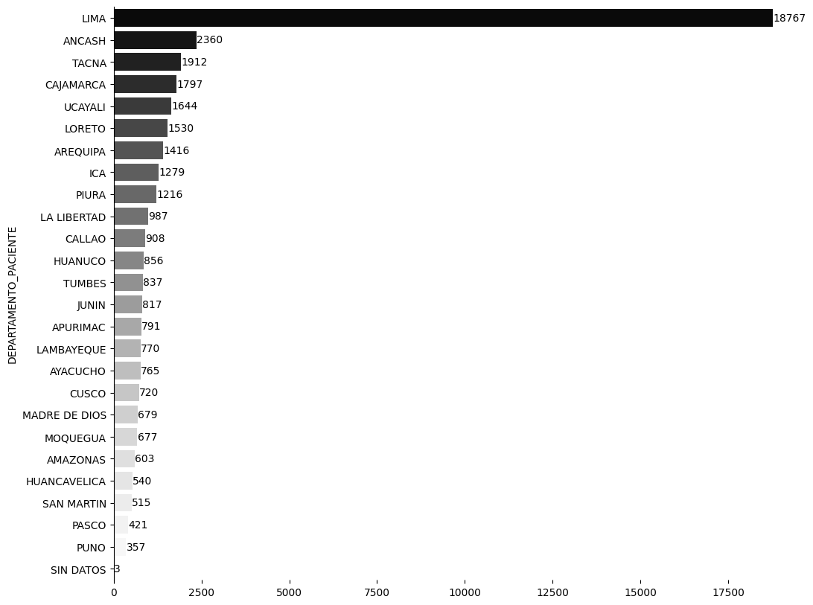
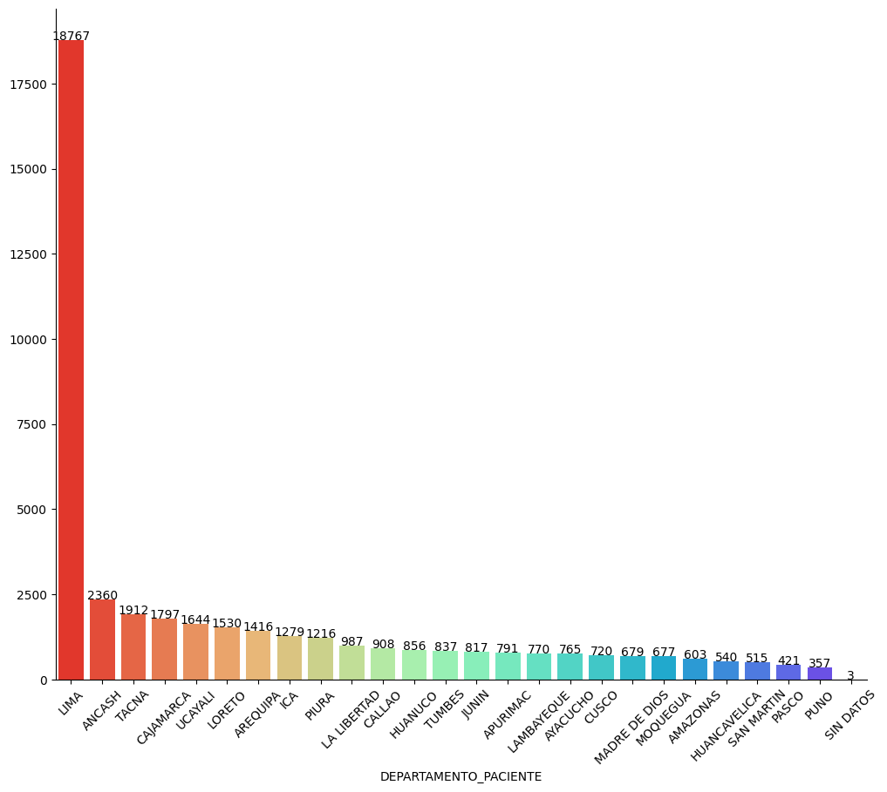
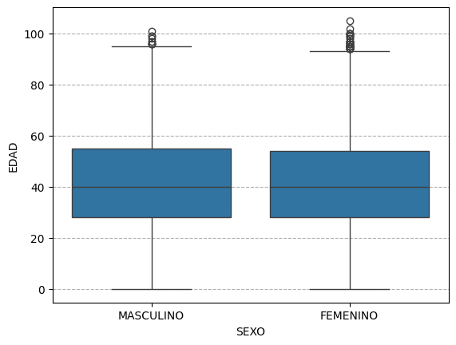
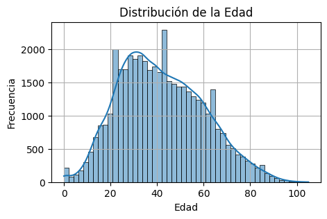
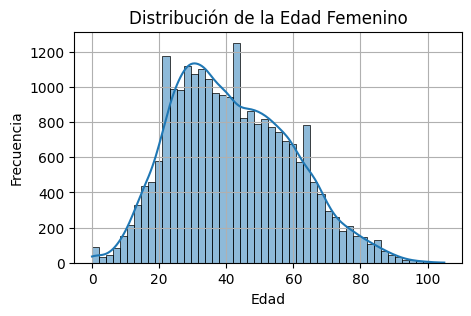
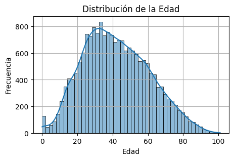
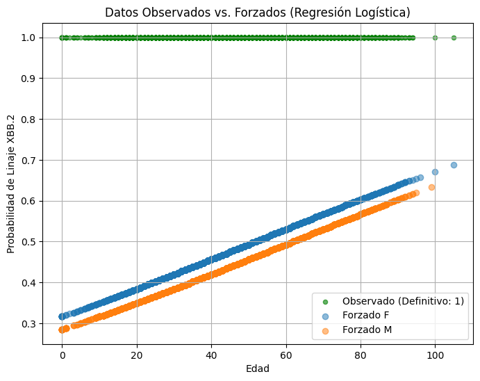

Bioestadística para Investigación Científica
usando Python con Inteligencia Artificial
| Autor | :VR ROJAS |
|---|---|
| :sacha.analytics@gmail.com | |
| Web | :sacha-analytics |
6. Diseño de Caso Estudio: Linaje Genómico de Pruebas Moleculares del Instituto Nacional de Salud para COVID-19 (INS)#
La enfermedad por coronavirus (COVID-19) es una enfermedad infecciosa causada por el virus SARS-CoV-2. La mayoría de las personas infectadas por el virus experimentarán una enfermedad respiratoria de leve a moderada y se recuperarán sin requerir un tratamiento especial. Sin embargo, algunas enfermarán gravemente y requerirán atención médica. Las personas mayores y las que padecen enfermedades subyacentes, como enfermedades cardiovasculares, diabetes, enfermedades respiratorias crónicas o cáncer, tienen más probabilidades de desarrollar una enfermedad grave. Cualquier persona, de cualquier edad, puede contraer la COVID-19 y enfermar gravemente o morir.
Según la Organización Mundial de la Salud (OMS), el “Linaje Genómico de Pruebas Moleculares del COVID-19” se refiere a la clasificación de las variantes del virus SARS-CoV-2 basándose en sus secuencias genéticas. En otras palabras, se trata de un sistema para identificar y categorizar diferentes cepas del virus COVID-19, utilizando información de sus genes. Estas pruebas moleculares, como las pruebas PCR, buscan el material genético (ARN) del virus para diagnosticar la infección.
Fuentes
Pastrian-Soto, G. Genetic and molecular basis of COVID-19 (SARS-CoV-2) mechanisms of pathogenesis and Imnune. Int. J. Odontostomat 2020; 14: 331, 337.Artículo.
I. Marco Teórico#
1.1 Objetivo#
Analizar la distribución y características de Linajes SARS-CoV-2 en función de las variables Sexo, Edad y Tipo de Diagnóstico utilizando métodos bioestadístico.
1.2 Fundamentos Bioestadísticos#
1.2.1 Tipos de variables#
Sexo: categórica nomial (Femenino, Masculino).
Edad: cuantitativa continua.
Tipo de Diagnóstico (Tipo de Dx): categórica nominal.
1.2.2 Métodos estadísticos relevantes#
Estadística descriptiva univariada y bivariada
Distribución de frecuencias.
Medidas de tendencia central y dispersión.
Prueba de independencia (Chi-cuadrado)
Comparaciones de medidas (t-test, ANOVA)
Modelos de regresión logística (para predecir DX)
Modelos multivariantes (regresión logística si se desea modelar probabilidad de anemia)
Validación de supuestos estadísticos
II. Recolección de Datos#
2.1. Fuentes de datos#
Datos para caso estudio estudio: Linaje Genómico de Pruebas Moleculares - COVID-19.
III. Metodología Práctica#
3.1. Gestión de archivos y directorios en la Nube#
3.1.1. Montar Google Drive#
La siguiente celda de código monta Google Drive a la nube (centro de datos remoto de Google)
from google.colab import drive
drive.mount('/content/drive')
---------------------------------------------------------------------------
ModuleNotFoundError Traceback (most recent call last)
Cell In[1], line 1
----> 1 from google.colab import drive
2 drive.mount('/content/drive')
File ~/anaconda3/envs/jupyterbook/lib/python3.13/site-packages/google/colab/__init__.py:20
17 from __future__ import division as _
18 from __future__ import print_function as _
---> 20 from google.colab import _import_hooks
21 from google.colab import _installation_commands
22 from google.colab import _shell_customizations
File ~/anaconda3/envs/jupyterbook/lib/python3.13/site-packages/google/colab/_import_hooks/__init__.py:16
1 # Copyright 2018 Google Inc.
2 #
3 # Licensed under the Apache License, Version 2.0 (the "License");
(...) 12 # See the License for the specific language govestylerning permissions and
13 # limitations under the License.
14 """Colab import customizations to the IPython runtime."""
---> 16 from google.colab._import_hooks import _altair
17 from google.colab._import_hooks import _cv2
20 def _register_hooks():
File ~/anaconda3/envs/jupyterbook/lib/python3.13/site-packages/google/colab/_import_hooks/_altair.py:16
1 # Copyright 2018 Google Inc. All rights reserved.
2 #
3 # Licensed under the Apache License, Version 2.0 (the "License");
(...) 12 # See the License for the specific language governing permissions and
13 # limitations under the License.
14 """Import hook for ensuring that Altair's Colab renderer is registered."""
---> 16 import imp
17 import logging
18 import os
ModuleNotFoundError: No module named 'imp'
3.1.2. Explorar archivos y directorios de Google Drive desde la nube#
En la siguiente celda de código se define la ruta de Google Drive en la computadora en la nube
drive_dir = "/content/drive/MyDrive/"
print(drive_dir)
/content/drive/MyDrive/
La funión explorar_drive permite inspeccionar cada carpeta y subcarpetas de Google Drive
def explorar_drive(nombre_carpeta):
import os
ruta_drive ="/content/drive/MyDrive/"
contenido_carpeta = os.listdir(ruta_drive + nombre_carpeta)
n_elem = len(contenido_carpeta)
print(f"Ruta: {ruta_drive + nombre_carpeta}")
print(f"Numero de elementos: {n_elem}")
for i in range(n_elem):
print(f"({i}) {contenido_carpeta[i]}")
explorar_drive("Base_datos")
Ruta: /content/drive/MyDrive/Base_datos
Numero de elementos: 5
(0) fuente_de_datos.gdoc
(1) shapes
(2) biomedicina
(3) meteorologia
(4) finanzas
explorar_drive("Base_datos/biomedicina")
Ruta: /content/drive/MyDrive/Base_datos/biomedicina
Numero de elementos: 13
(0) datos_abiertos_vigilancia_dengue_2000_2023.csv
(1) datos_abiertos_vigilancia_malaria_2000_2008.csv
(2) datos_abiertos_vigilancia_malaria_2009_2023.csv
(3) Dataset_ExamenesLaboratorio_ConsultaExterna_PatologíasRelacionadas_Diabetes_202001_202404.csv
(4) datos_abiertos_vigilancia_zoonosis_2000_2023.csv
(5) datos_abiertos_vigilancia_iras_2000_2023.csv
(6) datos_abiertos_vigilancia_enfermedad_carrion_2000_2023.csv
(7) pmGenoma_25Septiembre2021.csv
(8) pmGenoma_27Sep2023.csv
(9) primeras_100_filas_anemia.gsheet
(10) TB_DIGTEL_ANEMIA_TRATAMIENTOS.csv
(11) analisis_datos.docx
(12) primeras_100_filas_anemia.xlsx
###3.2. Preparar Entorno
3.2.1 Importar paquetes#
# Paquete especializado en metodos numericos
import numpy as np
# Paquete especialozado manejo de estructuras de datos tipo tablas (Data Frames)
import pandas as pd
# Paquetes especializado para generar graficas
import seaborn as sns
import matplotlib.pyplot as plt
# Paquete especializados de estadística y metodos numéricos
from scipy import stats
# Paquete especializado en estadística
import statsmodels.api as sm
import statsmodels.formula.api as smf
#from statsmodels.formula.api import ols
3.2.2. Explorar herramientas de Paquetes#
print("Lista de todos los atributos (métodos, clases, funciones):")
herramientas_paquete = dir(np)
numero_herramientas = len(herramientas_paquete)
print(f"Numero de herramientas: {numero_herramientas}")
for i in range(numero_herramientas):
print(f"({i}) {herramientas_paquete[i]}")
Lista de todos los atributos (métodos, clases, funciones):
Numero de herramientas: 533
(0) False_
(1) ScalarType
(2) True_
(3) _CopyMode
(4) _NoValue
(5) __NUMPY_SETUP__
(6) __all__
(7) __array_api_version__
(8) __builtins__
(9) __cached__
(10) __config__
(11) __dir__
(12) __doc__
(13) __expired_attributes__
(14) __file__
(15) __former_attrs__
(16) __future_scalars__
(17) __getattr__
(18) __loader__
(19) __name__
(20) __numpy_submodules__
(21) __package__
(22) __path__
(23) __spec__
(24) __version__
(25) _core
(26) _distributor_init
(27) _expired_attrs_2_0
(28) _get_promotion_state
(29) _globals
(30) _int_extended_msg
(31) _mat
(32) _msg
(33) _no_nep50_warning
(34) _pyinstaller_hooks_dir
(35) _pytesttester
(36) _set_promotion_state
(37) _specific_msg
(38) _type_info
(39) _typing
(40) _utils
(41) abs
(42) absolute
(43) acos
(44) acosh
(45) add
(46) all
(47) allclose
(48) amax
(49) amin
(50) angle
(51) any
(52) append
(53) apply_along_axis
(54) apply_over_axes
(55) arange
(56) arccos
(57) arccosh
(58) arcsin
(59) arcsinh
(60) arctan
(61) arctan2
(62) arctanh
(63) argmax
(64) argmin
(65) argpartition
(66) argsort
(67) argwhere
(68) around
(69) array
(70) array2string
(71) array_equal
(72) array_equiv
(73) array_repr
(74) array_split
(75) array_str
(76) asanyarray
(77) asarray
(78) asarray_chkfinite
(79) ascontiguousarray
(80) asfortranarray
(81) asin
(82) asinh
(83) asmatrix
(84) astype
(85) atan
(86) atan2
(87) atanh
(88) atleast_1d
(89) atleast_2d
(90) atleast_3d
(91) average
(92) bartlett
(93) base_repr
(94) binary_repr
(95) bincount
(96) bitwise_and
(97) bitwise_count
(98) bitwise_invert
(99) bitwise_left_shift
(100) bitwise_not
(101) bitwise_or
(102) bitwise_right_shift
(103) bitwise_xor
(104) blackman
(105) block
(106) bmat
(107) bool
(108) bool_
(109) broadcast
(110) broadcast_arrays
(111) broadcast_shapes
(112) broadcast_to
(113) busday_count
(114) busday_offset
(115) busdaycalendar
(116) byte
(117) bytes_
(118) c_
(119) can_cast
(120) cbrt
(121) cdouble
(122) ceil
(123) char
(124) character
(125) choose
(126) clip
(127) clongdouble
(128) column_stack
(129) common_type
(130) complex128
(131) complex256
(132) complex64
(133) complexfloating
(134) compress
(135) concat
(136) concatenate
(137) conj
(138) conjugate
(139) convolve
(140) copy
(141) copysign
(142) copyto
(143) core
(144) corrcoef
(145) correlate
(146) cos
(147) cosh
(148) count_nonzero
(149) cov
(150) cross
(151) csingle
(152) ctypeslib
(153) cumprod
(154) cumsum
(155) datetime64
(156) datetime_as_string
(157) datetime_data
(158) deg2rad
(159) degrees
(160) delete
(161) diag
(162) diag_indices
(163) diag_indices_from
(164) diagflat
(165) diagonal
(166) diff
(167) digitize
(168) divide
(169) divmod
(170) dot
(171) double
(172) dsplit
(173) dstack
(174) dtype
(175) dtypes
(176) e
(177) ediff1d
(178) einsum
(179) einsum_path
(180) emath
(181) empty
(182) empty_like
(183) equal
(184) errstate
(185) euler_gamma
(186) exceptions
(187) exp
(188) exp2
(189) expand_dims
(190) expm1
(191) expm1x
(192) extract
(193) eye
(194) f2py
(195) fabs
(196) fft
(197) fill_diagonal
(198) finfo
(199) fix
(200) flatiter
(201) flatnonzero
(202) flexible
(203) flip
(204) fliplr
(205) flipud
(206) float128
(207) float16
(208) float32
(209) float64
(210) float_power
(211) floating
(212) floor
(213) floor_divide
(214) fmax
(215) fmin
(216) fmod
(217) format_float_positional
(218) format_float_scientific
(219) frexp
(220) from_dlpack
(221) frombuffer
(222) fromfile
(223) fromfunction
(224) fromiter
(225) frompyfunc
(226) fromregex
(227) fromstring
(228) full
(229) full_like
(230) gcd
(231) generic
(232) genfromtxt
(233) geomspace
(234) get_include
(235) get_printoptions
(236) getbufsize
(237) geterr
(238) geterrcall
(239) gradient
(240) greater
(241) greater_equal
(242) half
(243) hamming
(244) hanning
(245) heaviside
(246) histogram
(247) histogram2d
(248) histogram_bin_edges
(249) histogramdd
(250) hsplit
(251) hstack
(252) hypot
(253) i0
(254) identity
(255) iinfo
(256) imag
(257) in1d
(258) index_exp
(259) indices
(260) inexact
(261) inf
(262) info
(263) inner
(264) insert
(265) int16
(266) int32
(267) int64
(268) int8
(269) int_
(270) intc
(271) integer
(272) interp
(273) intersect1d
(274) intp
(275) invert
(276) is_busday
(277) isclose
(278) iscomplex
(279) iscomplexobj
(280) isdtype
(281) isfinite
(282) isfortran
(283) isin
(284) isinf
(285) isnan
(286) isnat
(287) isneginf
(288) isposinf
(289) isreal
(290) isrealobj
(291) isscalar
(292) issubdtype
(293) iterable
(294) ix_
(295) kaiser
(296) kron
(297) lcm
(298) ldexp
(299) left_shift
(300) less
(301) less_equal
(302) lexsort
(303) lib
(304) linalg
(305) linspace
(306) little_endian
(307) load
(308) loadtxt
(309) log
(310) log10
(311) log1p
(312) log2
(313) logaddexp
(314) logaddexp2
(315) logical_and
(316) logical_not
(317) logical_or
(318) logical_xor
(319) logspace
(320) long
(321) longdouble
(322) longlong
(323) ma
(324) mask_indices
(325) matmul
(326) matrix
(327) matrix_transpose
(328) max
(329) maximum
(330) may_share_memory
(331) mean
(332) median
(333) memmap
(334) meshgrid
(335) mgrid
(336) min
(337) min_scalar_type
(338) minimum
(339) mintypecode
(340) mod
(341) modf
(342) moveaxis
(343) multiply
(344) nan
(345) nan_to_num
(346) nanargmax
(347) nanargmin
(348) nancumprod
(349) nancumsum
(350) nanmax
(351) nanmean
(352) nanmedian
(353) nanmin
(354) nanpercentile
(355) nanprod
(356) nanquantile
(357) nanstd
(358) nansum
(359) nanvar
(360) ndarray
(361) ndenumerate
(362) ndim
(363) ndindex
(364) nditer
(365) negative
(366) nested_iters
(367) newaxis
(368) nextafter
(369) nonzero
(370) not_equal
(371) number
(372) object_
(373) ogrid
(374) ones
(375) ones_like
(376) outer
(377) packbits
(378) pad
(379) partition
(380) percentile
(381) permute_dims
(382) pi
(383) piecewise
(384) place
(385) poly
(386) poly1d
(387) polyadd
(388) polyder
(389) polydiv
(390) polyfit
(391) polyint
(392) polymul
(393) polynomial
(394) polysub
(395) polyval
(396) positive
(397) pow
(398) power
(399) printoptions
(400) prod
(401) promote_types
(402) ptp
(403) put
(404) put_along_axis
(405) putmask
(406) quantile
(407) r_
(408) rad2deg
(409) radians
(410) random
(411) ravel
(412) ravel_multi_index
(413) real
(414) real_if_close
(415) rec
(416) recarray
(417) reciprocal
(418) record
(419) remainder
(420) repeat
(421) require
(422) reshape
(423) resize
(424) result_type
(425) right_shift
(426) rint
(427) roll
(428) rollaxis
(429) roots
(430) rot90
(431) round
(432) row_stack
(433) s_
(434) save
(435) savetxt
(436) savez
(437) savez_compressed
(438) sctypeDict
(439) searchsorted
(440) select
(441) set_printoptions
(442) setbufsize
(443) setdiff1d
(444) seterr
(445) seterrcall
(446) setxor1d
(447) shape
(448) shares_memory
(449) short
(450) show_config
(451) show_runtime
(452) sign
(453) signbit
(454) signedinteger
(455) sin
(456) sinc
(457) single
(458) sinh
(459) size
(460) sort
(461) sort_complex
(462) spacing
(463) split
(464) sqrt
(465) square
(466) squeeze
(467) stack
(468) std
(469) str_
(470) strings
(471) subtract
(472) sum
(473) swapaxes
(474) take
(475) take_along_axis
(476) tan
(477) tanh
(478) tensordot
(479) test
(480) testing
(481) tile
(482) timedelta64
(483) trace
(484) transpose
(485) trapezoid
(486) trapz
(487) tri
(488) tril
(489) tril_indices
(490) tril_indices_from
(491) trim_zeros
(492) triu
(493) triu_indices
(494) triu_indices_from
(495) true_divide
(496) trunc
(497) typecodes
(498) typename
(499) typing
(500) ubyte
(501) ufunc
(502) uint
(503) uint16
(504) uint32
(505) uint64
(506) uint8
(507) uintc
(508) uintp
(509) ulong
(510) ulonglong
(511) union1d
(512) unique
(513) unique_all
(514) unique_counts
(515) unique_inverse
(516) unique_values
(517) unpackbits
(518) unravel_index
(519) unsignedinteger
(520) unwrap
(521) ushort
(522) vander
(523) var
(524) vdot
(525) vecdot
(526) vectorize
(527) void
(528) vsplit
(529) vstack
(530) where
(531) zeros
(532) zeros_like
Para obtener documentación detallada sobre el paquete numpy, puedes usar help(np). Esto imprimirá una gran cantidad de información directamente en la salida de la celda. Advertencia: Esta salida puede ser muy larga.
# Descomenta la siguiente línea para ver la documentación completa de numpy
help(np.zeros)
Help on built-in function zeros in module numpy:
zeros(...)
zeros(shape, dtype=float, order='C', *, like=None)
Return a new array of given shape and type, filled with zeros.
Parameters
----------
shape : int or tuple of ints
Shape of the new array, e.g., ``(2, 3)`` or ``2``.
dtype : data-type, optional
The desired data-type for the array, e.g., `numpy.int8`. Default is
`numpy.float64`.
order : {'C', 'F'}, optional, default: 'C'
Whether to store multi-dimensional data in row-major
(C-style) or column-major (Fortran-style) order in
memory.
like : array_like, optional
Reference object to allow the creation of arrays which are not
NumPy arrays. If an array-like passed in as ``like`` supports
the ``__array_function__`` protocol, the result will be defined
by it. In this case, it ensures the creation of an array object
compatible with that passed in via this argument.
.. versionadded:: 1.20.0
Returns
-------
out : ndarray
Array of zeros with the given shape, dtype, and order.
See Also
--------
zeros_like : Return an array of zeros with shape and type of input.
empty : Return a new uninitialized array.
ones : Return a new array setting values to one.
full : Return a new array of given shape filled with value.
Examples
--------
>>> np.zeros(5)
array([ 0., 0., 0., 0., 0.])
>>> np.zeros((5,), dtype=int)
array([0, 0, 0, 0, 0])
>>> np.zeros((2, 1))
array([[ 0.],
[ 0.]])
>>> s = (2,2)
>>> np.zeros(s)
array([[ 0., 0.],
[ 0., 0.]])
>>> np.zeros((2,), dtype=[('x', 'i4'), ('y', 'i4')]) # custom dtype
array([(0, 0), (0, 0)],
dtype=[('x', '<i4'), ('y', '<i4')])
3.3. Importar Base de Datos#
nombre_archivo = "pmGenoma_27Sep2023.csv"
data_dir = "/content/drive/MyDrive/Base_datos/biomedicina/"
df = pd.read_csv(data_dir + nombre_archivo, sep=";")
print(df)
FECHA_CORTE UUID FECHA_MUESTRA \
0 20230927 NaN 20210307.0
1 20230927 NaN 20210616.0
2 20230927 NaN 20210727.0
3 20230927 NaN 20211022.0
4 20230927 NaN 20211127.0
... ... ... ...
43167 NaN NaN NaN
43168 (43167 rows affected) NaN NaN
43169 NaN NaN NaN
43170 NaN NaN NaN
43171 Completion time: 2023-09-27T08:18:56.5124153-0... NaN NaN
EDAD SEXO INSTITUCION UBIGEO_PACIENTE \
0 54.0 MASCULINO GOBIERNO REGIONAL 240102.0
1 46.0 FEMENINO MINISTERIO DE SALUD - DIRIS 140126.0
2 33.0 FEMENINO MUNICIPALIDADES 140140.0
3 26.0 FEMENINO MINISTERIO DE SALUD - DIRIS 140135.0
4 23.0 MASCULINO MINISTERIO DE SALUD - DIRIS 140106.0
... ... ... ... ...
43167 NaN NaN NaN NaN
43168 NaN NaN NaN NaN
43169 NaN NaN NaN NaN
43170 NaN NaN NaN NaN
43171 NaN NaN NaN NaN
DEPARTAMENTO_PACIENTE PROVINCIA_PACIENTE DISTRITO_PACIENTE \
0 CALLAO CALLAO BELLAVISTA
1 LIMA LIMA SAN MARTIN DE PORRES
2 LIMA LIMA SAN BORJA
3 LIMA LIMA EL AGUSTINO
4 LIMA LIMA COMAS
... ... ... ...
43167 NaN NaN NaN
43168 NaN NaN NaN
43169 NaN NaN NaN
43170 NaN NaN NaN
43171 NaN NaN NaN
DEPARTAMENTO_MUESTRA PROVINCIA_MUESTRA DISTRITO_MUESTRA \
0 CALLAO PROV. CONST. DEL CALLAO BELLAVISTA
1 LIMA LIMA LOS OLIVOS
2 LIMA LIMA SAN BORJA
3 LIMA LIMA EL AGUSTINO
4 LIMA LIMA COMAS
... ... ... ...
43167 NaN NaN NaN
43168 NaN NaN NaN
43169 NaN NaN NaN
43170 NaN NaN NaN
43171 NaN NaN NaN
TIPO_MUESTRA RESULTADO
0 HISOPADO NASAL Y FARINGEO Linaje C.37
1 HISOPADO NASAL Y FARINGEO Linaje C.37
2 HISOPADO NASAL Y FARINGEO Linaje C.37
3 HISOPADO NASAL Y FARINGEO Linaje AY.39
4 HISOPADO NASAL Y FARINGEO Linaje AY.39.2
... ... ...
43167 NaN NaN
43168 NaN NaN
43169 NaN NaN
43170 NaN NaN
43171 NaN NaN
[43172 rows x 15 columns]
3.4. Revision de Metadatos#
print(df.columns.to_list())
['FECHA_CORTE', 'UUID', 'FECHA_MUESTRA', 'EDAD', 'SEXO', 'INSTITUCION', 'UBIGEO_PACIENTE', 'DEPARTAMENTO_PACIENTE', 'PROVINCIA_PACIENTE', 'DISTRITO_PACIENTE', 'DEPARTAMENTO_MUESTRA', 'PROVINCIA_MUESTRA', 'DISTRITO_MUESTRA', 'TIPO_MUESTRA', 'RESULTADO']
for i in range(len(df.columns.to_list())):
print(f"{i}- {df.columns.to_list()[i]}")
0- FECHA_CORTE
1- UUID
2- FECHA_MUESTRA
3- EDAD
4- SEXO
5- INSTITUCION
6- UBIGEO_PACIENTE
7- DEPARTAMENTO_PACIENTE
8- PROVINCIA_PACIENTE
9- DISTRITO_PACIENTE
10- DEPARTAMENTO_MUESTRA
11- PROVINCIA_MUESTRA
12- DISTRITO_MUESTRA
13- TIPO_MUESTRA
14- RESULTADO
3.4.1. Elección de variables de interés#
df_interes = df[[ "SEXO","EDAD", "RESULTADO", "DEPARTAMENTO_PACIENTE"]]
print(df_interes)
SEXO EDAD RESULTADO DEPARTAMENTO_PACIENTE
0 MASCULINO 54.0 Linaje C.37 CALLAO
1 FEMENINO 46.0 Linaje C.37 LIMA
2 FEMENINO 33.0 Linaje C.37 LIMA
3 FEMENINO 26.0 Linaje AY.39 LIMA
4 MASCULINO 23.0 Linaje AY.39.2 LIMA
... ... ... ... ...
43167 NaN NaN NaN NaN
43168 NaN NaN NaN NaN
43169 NaN NaN NaN NaN
43170 NaN NaN NaN NaN
43171 NaN NaN NaN NaN
[43172 rows x 4 columns]
3.5. Análisis Estadístico Descriptivo Univariado y Bivariado#
Esta sección se enfoca en realizar análisis estadístico descriptivo sobre las variables seleccionadas del DataFrame df_interes: Sexo, Edad y Tipo_Dx. Cubriremos estadísticas descriptivas univariadas (análisis de variable individual) y bivariadas (análisis de la relación entre dos variables).
3.5.1. Distribución de frecuencia de datos categóricos por columna (análisis univariado)#
Para variables categóricas como Sexo, Tipo_edad y Tipo_Dx, el análisis descriptivo más común es observar la distribución de frecuencias. Esto nos indica cuántas veces aparece cada valor único en la columna.
print(df_interes["SEXO"].value_counts())
print("="*50)
print(df_interes["EDAD"].describe())
print("="*50)
print(df_interes["RESULTADO"].value_counts())
print("="*50)
print(df_interes["DEPARTAMENTO_PACIENTE"].value_counts())
print("="*50)
SEXO
FEMENINO 24096
MASCULINO 19071
Name: count, dtype: int64
==================================================
count 43157.000000
mean 41.938527
std 18.119885
min 0.000000
25% 28.000000
50% 40.000000
75% 55.000000
max 105.000000
Name: EDAD, dtype: float64
==================================================
RESULTADO
Linaje XBB.2 4654
Linaje C.37 3678
Linaje BA.5.1 3606
Linaje BA.1 2062
Linaje BA.1.1 1692
...
Linaje BF.27 1
Linaje BN.3.1 1
Linaje BQ.1.10 1
Linaje ED.2 1
Linaje AY.114 1
Name: count, Length: 520, dtype: int64
==================================================
DEPARTAMENTO_PACIENTE
LIMA 18767
ANCASH 2360
TACNA 1912
CAJAMARCA 1797
UCAYALI 1644
LORETO 1530
AREQUIPA 1416
ICA 1279
PIURA 1216
LA LIBERTAD 987
CALLAO 908
HUANUCO 856
TUMBES 837
JUNIN 817
APURIMAC 791
LAMBAYEQUE 770
AYACUCHO 765
CUSCO 720
MADRE DE DIOS 679
MOQUEGUA 677
AMAZONAS 603
HUANCAVELICA 540
SAN MARTIN 515
PASCO 421
PUNO 357
SIN DATOS 3
Name: count, dtype: int64
==================================================
conteos_departamento = df["DEPARTAMENTO_PACIENTE"].value_counts()
nombres_departamentos = conteos_departamento.index
frecuencias_departamentos = conteos_departamento.values
#print(nombres_departamentos)
print(frecuencias_departamentos)
[18767 2360 1912 1797 1644 1530 1416 1279 1216 987 908 856
837 817 791 770 765 720 679 677 603 540 515 421
357 3]
plt.figure(figsize=(12, 10)) # Ajusta el tamaño de la figura
# graficar barras horizontales
ax = sns.barplot(x=frecuencias_departamentos, y=nombres_departamentos, palette="Greys_r")
# Añadir la cantidad total sobre cada barra
for i, count in enumerate(conteos_departamento.values):
ax.text(count + 5, i, str(count), va='center')
# Remove the top and right spines (axes)
ax.spines['top'].set_visible(False)
ax.spines['right'].set_visible(False)
ax.spines['bottom'].set_visible(False)
plt.show() # Muestra el gráfico
/tmp/ipykernel_6195/1170333040.py:4: FutureWarning:
Passing `palette` without assigning `hue` is deprecated and will be removed in v0.14.0. Assign the `y` variable to `hue` and set `legend=False` for the same effect.
ax = sns.barplot(x=frecuencias_departamentos, y=nombres_departamentos, palette="Greys_r")

plt.figure(figsize=(12, 10)) # Ajusta el tamaño de la figura
# graficar barras verticales
ax = sns.barplot(x=nombres_departamentos, y=frecuencias_departamentos, palette="rainbow_r")
plt.xticks(rotation=45)
# Añadir la cantidad total sobre cada barra
for i, count in enumerate(conteos_departamento.values):
ax.text(i, count + 5, str(count), ha='center')
# Remove the top and right spines (axes)
ax.spines['top'].set_visible(False)
ax.spines['right'].set_visible(False)
plt.show() # Muestra el gráfico
/tmp/ipykernel_6195/2078317292.py:4: FutureWarning:
Passing `palette` without assigning `hue` is deprecated and will be removed in v0.14.0. Assign the `x` variable to `hue` and set `legend=False` for the same effect.
ax = sns.barplot(x=nombres_departamentos, y=frecuencias_departamentos, palette="rainbow_r")

3.5.2. Relación de datos categóricos vs numéricos (análisis bivariado)#
Para explorar la relación entre una variable categórica (Sexo) y una variable numérica (Edad), un gráfico de cajas (boxplot) es una visualización adecuada.
sns.boxplot(x="SEXO", y="EDAD", data=df_interes)
plt.grid(True, axis="y", linestyle="--")
plt.show()

3.5.3. Distribución de la variable “Edad”#
# Estadísticas descriptivas para la variable 'Edad'
print("Estadísticas Descriptivas para 'Edad':")
print(df_interes["EDAD"].describe())
print("\n" + "="*50 + "\n") # Separador para mayor claridad
Estadísticas Descriptivas para 'Edad':
count 43157.000000
mean 41.938527
std 18.119885
min 0.000000
25% 28.000000
50% 40.000000
75% 55.000000
max 105.000000
Name: EDAD, dtype: float64
==================================================
# Histograma para visualizar la distribución de 'Edad'
print("Visualización de la Distribución para 'Edad' (Histograma):")
plt.figure(figsize=(5, 3)) # (ncols, nfil) Establece el tamaño de la figura para el gráfico
sns.histplot(df_interes["EDAD"], bins=50, kde=True) # Crea el histograma
plt.title("Distribución de la Edad") # Añade un título al gráfico
plt.xlabel("Edad") # Añade una etiqueta al eje x
plt.ylabel("Frecuencia") # Añade una etiqueta al eje y
plt.grid(True) # Añade una cuadrícula al gráfico
plt.show() # Muestra el gráfico
Visualización de la Distribución para 'Edad' (Histograma):

3.5.4. Análisis de Medidas de Tendencia Central y Dispersión#
Vamos a calcular medidas de tendencia central (como la media, mediana y moda) y medidas de dispersión (como la desviación estándar, varianza y rango) para las variables Sexo, Edad y Tipo_Dx.
# Análisis para la variable 'Edad' (Cuantitativa)
print("Análisis para la variable 'Edad':")
# Medidas de Tendencia Central para 'Edad'
print(f" Media: {df_interes['EDAD'].mean():.2f}")
print(f" Mediana: {df_interes['EDAD'].median():.2f}")
print(f" Moda: {df_interes['EDAD'].mode()[0]}") # mode() puede devolver múltiples valores si hay un empate
print("\n")
# Medidas de Dispersión para 'Edad'
print(f" Desviación Estándar: {df_interes['EDAD'].std():.2f}")
print(f" Varianza: {df_interes['EDAD'].var():.2f}")
print(f" Rango: {df_interes['EDAD'].max() - df_interes['EDAD'].min()}")
print(f" Cuartil 1 (Q1): {df_interes['EDAD'].quantile(0.25):.2f}")
print(f" Cuartil 3 (Q3): {df_interes['EDAD'].quantile(0.75):.2f}")
print(f" Rango Intercuartílico (IQR): {df_interes['EDAD'].quantile(0.75) - df_interes['EDAD'].quantile(0.25):.2f}")
print("\n" + "="*50 + "\n") # Separador
# Análisis para la variable 'Sexo' (Categórica)
print("Análisis para la variable 'Edad':")
# Medida de Tendencia Central para 'Sexo' (Moda)
print(f" Moda: {df_interes['EDAD'].mode()[0]}") # La categoría más frecuente
print("\n" + "="*50 + "\n") # Separador
# Análisis para la variable 'Tipo_edad' (Categórica)
print("Análisis para la variable 'SEXO':")
# Medida de Tendencia Central para 'SEXO' (Moda)
print(f" Moda: {df_interes['SEXO'].mode()[0]}") # La categoría más frecuente
Análisis para la variable 'Edad':
Media: 41.94
Mediana: 40.00
Moda: 33.0
Desviación Estándar: 18.12
Varianza: 328.33
Rango: 105.0
Cuartil 1 (Q1): 28.00
Cuartil 3 (Q3): 55.00
Rango Intercuartílico (IQR): 27.00
==================================================
Análisis para la variable 'Edad':
Moda: 33.0
==================================================
Análisis para la variable 'SEXO':
Moda: FEMENINO
3.6. Estadística inferencial: pruebas de hipótesis#
3.6.1. Chi-cuadrado#
La prueba de hipótesis no paramétrica Chi-cuadrado es una técnica estadística fundamental para analizar datos categóricos, es decir, datos que se pueden agrupar en categorías (com sexo, tipo de enfermedad, opinión, etc.). Se considera no paramétrica porque no asume que los datos sigan una distribución de probabilidad específica (como la distribución normal), lo que la hace muy útil en situaciones donde las suposiciones de pruebas paramétricas no se cumplen.
¿Por qué se usa la prueba de Chi-cuadrado?
- Se aplica a datos categóricos en forma de tablas de frecuencias.
- Se utiliza para determinar si existe una relación o asociación significativa entre dos variables (prueba de independencia).
- Se usa para comparar una distribución observada con una distribución teórica (prueba de bondad de ajuste).
- Sirve para conocer si la distribución de una variable categórica es la misma en dos o más poblaciones diferentes (prueba de homogeneidad).
Hipótesis
Hipótesis Nula (\(H_{0}\)): No hay una relación ó asociación entre dos variables categóricas (las variables son independientes).
Hipóteisis Alternativa (\(H_{1}\)): Hay una relación ó asociación significativa entre dos variables categóricas. \( \)
Interpretación
Si el valor p (p-value) es mayor que el nivel de significancia (\(α = 0.05\)): No se rechaza Hipótesis Nula (\(H_{0}\)). Por tanto, no hay evidencia de relación ó asociación entre variables.
Si el valor p es menor que el nivel de significancia: Se rechaza la Hipóteisis Nula (\(H_{0}\)). Por tanto, Existe evidencia estadística de relación o asociación entre las variables. \( \)
Consideraciones claves
Tamaño muestral: Requiere frecuencias esperadas \(\geq 5\) en cada celda.
Variables categóricas: No aplica para variables continuas.
Direccionalidad: Chi-Cuadrado solo detecta relación o asociación , no causalida.
aplicación tabla de contingencia original del caso estudio
departamento
provincia
distrito
ano
semana
sub_reg_nt
ubigeo
ira_no_neumonia
neumonias_men5
neumonias_60mas
hospitalizados_men5
hospitalizados_60mas
defunciones_men5
defunciones_60mas
print(df_interes["RESULTADO"].value_counts())
RESULTADO
Linaje XBB.2 4654
Linaje C.37 3678
Linaje BA.5.1 3606
Linaje BA.1 2062
Linaje BA.1.1 1692
...
Linaje BF.27 1
Linaje BN.3.1 1
Linaje BQ.1.10 1
Linaje ED.2 1
Linaje AY.114 1
Name: count, Length: 520, dtype: int64
tipos_linaje = df_interes["RESULTADO"].value_counts()
print(tipos_linaje.index)
Index(['Linaje XBB.2', 'Linaje C.37 ', 'Linaje BA.5.1 ', 'Linaje BA.1 ',
'Linaje BA.1.1 ', 'Linaje BA.2.12.1 ', 'Linaje XBB.2 ', 'Linaje P.1 ',
'Linaje BA.2 ', 'Linaje B.1.617.2 ',
...
'Linaje AZ.5 ', 'Linaje BN.1.3', 'Linaje BA.2.81 ', 'Linaje BQ.1.1.24',
'Linaje XBB.1.16.7', 'Linaje BF.27', 'Linaje BN.3.1', 'Linaje BQ.1.10',
'Linaje ED.2', 'Linaje AY.114 '],
dtype='object', name='RESULTADO', length=520)
resultados_seleccionados = ["Linaje XBB.2", "Linaje C.37 ", "Linaje BA.1 "]
df_filtrado = df_interes[df_interes["RESULTADO"].isin(resultados_seleccionados)]
print(df_filtrado["RESULTADO"].value_counts())
print("="*50)
RESULTADO
Linaje XBB.2 4654
Linaje C.37 3678
Linaje BA.1 2062
Name: count, dtype: int64
==================================================
conteos_departamento = df["RESULTADO"].value_counts()
nombres_linaje = conteos_departamento.index
frecuencias_linajes = conteos_departamento.values
print(nombres_linaje)
Index(['Linaje XBB.2', 'Linaje C.37 ', 'Linaje BA.5.1 ', 'Linaje BA.1 ',
'Linaje BA.1.1 ', 'Linaje BA.2.12.1 ', 'Linaje XBB.2 ', 'Linaje P.1 ',
'Linaje BA.2 ', 'Linaje B.1.617.2 ',
...
'Linaje AZ.5 ', 'Linaje BN.1.3', 'Linaje BA.2.81 ', 'Linaje BQ.1.1.24',
'Linaje XBB.1.16.7', 'Linaje BF.27', 'Linaje BN.3.1', 'Linaje BQ.1.10',
'Linaje ED.2', 'Linaje AY.114 '],
dtype='object', name='RESULTADO', length=520)
tabla = pd.crosstab(df_filtrado["SEXO"], df_filtrado["RESULTADO"])
print(tabla)
RESULTADO Linaje BA.1 Linaje C.37 Linaje XBB.2
SEXO
FEMENINO 1155 1860 2610
MASCULINO 907 1818 2044
"""
Aplicar la prueba de Chi-cuadrado de independencia
---------------------------------------------------
chi2_stat : Esta variable almacena el estadístico Chi-cuadrado
p_valor : Esta variable almacena el valor p, que representa la
la probabilidad de observar los datos si no ubiera
relación entre las variables
dof : En esta variable contine los grados de libertar, que
es un parámetro relacionado con el tamaño de la muestra
y el número de categorias en las variables.
freq_esperadas : A esta variable se le asigna las frecuencias esperadas
para cada celda de la tabla de contingencia si no hubiera
relación entre las variables.
"""
chi2_stat, p_valor, dof, freq_esperadas = stats.chi2_contingency(tabla)
print("Prueba de Chi-cuadrado de Independencia:")
print(f"Estadístico Chi-cuadrado: {chi2_stat:.3f}")
print(f"Grados de libertad: {dof}")
print(f"p-valor: {p_valor:.3f}\n")
alpha = 0.05 # Nivel de significancia
# Interpretación:
print("\nResultado:")
if p_valor >= alpha:
print("\tNo se rechaza H0:\n")
print("\tNo hay una relación ó asociación significativa entre Sexo y Linaje.\n")
else:
print("\tSe rechaza H0:\n")
print("\tHay una relación ó asociación significativa entre Sexo y Linaje.\n")
Prueba de Chi-cuadrado de Independencia:
Estadístico Chi-cuadrado: 28.841
Grados de libertad: 2
p-valor: 0.000
Resultado:
Se rechaza H0:
Hay una relación ó asociación significativa entre Sexo y Linaje.
3.6.2. Comparación de medidas: prueba de hipótesis T-test#
La prueba T-test (también conocido como t de Student) se utiliza para comparar las medias de dos muestras independientes. En este caso, las dos muestras son las edades de los individuos masculinos y femeninos.
El T-test es una herramienta fundamental en bioestadística que permite tomar decisiones basadas en evidencia sobre diferencias entre grupos, siendo especialmente valioso en investigación médica y epidemiológica donde las decisiones pueden tener implicaciones importantes para la salud pública.
Supuestos del T-test
Los datos deben seguir una distribución aproximadamente normal (verificar con histogramas o pruebas como Shapiro-Wilk).
Hipótesis
Hipótesis Nula (\(H_{0}\)): No hay una diferencia significativa en la media de la edad entre hombres y mujeres (medias iguales).
Hipóteisis Alternativa (\(H_{1}\)): Hay una diferencia significativa en la media de la edad entre hombres y mujeres (medias diferentes).
Interpretación
si p-valor \(\lt \alpha\), se rechaza la hipótesis nula (\(H_{0}\)): hay evidencia estadísticamente significativa de una diferencia entre los grupos. Generalmente, \(\alpha = 0.05\), donde \(\alpha\) es el nivel de significancia.
si p-valor \(\geq \alpha\), No se rechaza la hipótesis nula (\(H_{0}\)): no hay evidencia suficiente para afirmar que las medias son distintas
# Separar la variable 'Edad' en dos grupos basados en la variable 'Sexo'
edad_femenino = df_interes[df_interes["SEXO"] == "FEMENINO"]["EDAD"]
edad_masculino = df_interes[df_interes["SEXO"] == "MASCULINO"]["EDAD"]
# Histograma para visualizar la distribución de 'Edad'
print("Visualización de la Distribución para 'Edad' (Histograma):")
plt.figure(figsize=(5, 3)) # (ncols, nfil) Establece el tamaño de la figura para el gráfico
sns.histplot(edad_femenino, bins=50, kde=True) # Crea el histograma
plt.title("Distribución de la Edad Femenino") # Añade un título al gráfico
plt.xlabel("Edad") # Añade una etiqueta al eje x
plt.ylabel("Frecuencia") # Añade una etiqueta al eje y
plt.grid(True) # Añade una cuadrícula al gráfico
plt.show() # Muestra el gráfico
Visualización de la Distribución para 'Edad' (Histograma):

# Histograma para visualizar la distribución de 'Edad'
print("Visualización de la Distribución para 'Edad' (Histograma):")
plt.figure(figsize=(5, 3)) # (ncols, nfil) Establece el tamaño de la figura para el gráfico
sns.histplot(edad_masculino, bins=50, kde=True) # Crea el histograma
plt.title("Distribución de la Edad") # Añade un título al gráfico
plt.xlabel("Edad") # Añade una etiqueta al eje x
plt.ylabel("Frecuencia") # Añade una etiqueta al eje y
plt.grid(True) # Añade una cuadrícula al gráfico
plt.show() # Muestra el gráfico
Visualización de la Distribución para 'Edad' (Histograma):

print(edad_femenino.describe())
print("="*50)
print(edad_masculino.describe())
count 24094.000000
mean 41.819208
std 17.698572
min 0.000000
25% 28.000000
50% 40.000000
75% 54.000000
max 105.000000
Name: EDAD, dtype: float64
==================================================
count 19063.000000
mean 42.089335
std 18.638143
min 0.000000
25% 28.000000
50% 40.000000
75% 55.000000
max 101.000000
Name: EDAD, dtype: float64
Continuación de la prueba de T-test
# Realizar la prueba T-test independiente
# equal_var=True asume varianzas iguales (T-test estándar).
# Si no estamos seguros de la igualdad de varianzas.
t_stat, p_valor_ttest = stats.ttest_ind(edad_femenino, edad_masculino, equal_var=True)
print("Prueba T-test Independiente para la Edad entre Sexo Femenino y Masculino:")
print(f"Estadístico T: {t_stat}")
print(f"p-valor: {p_valor_ttest}\n")
# Interpretación del p-valor
alpha = 0.05 # Nivel de significancia comúnmente utilizado
print("Interpretación del resultado:")
if p_valor_ttest > alpha:
print("\tno se rechaza H0.")
print("\tConcluimos que no existe una diferencia estadísticamente significativa en la media de la edad entre el sexo femenino y masculino.")
else:
print("\tSe rechaza H0.")
print("\tConcluimos que existe una diferencia estadísticamente significativa en la media de la edad entre el sexo femenino y masculino.")
Prueba T-test Independiente para la Edad entre Sexo Femenino y Masculino:
Estadístico T: nan
p-valor: nan
Interpretación del resultado:
Se rechaza H0.
Concluimos que existe una diferencia estadísticamente significativa en la media de la edad entre el sexo femenino y masculino.
# Opcional: Mostrar las medias de edad para cada grupo
print("\nMedias de Edad por Sexo:")
print(f"\tMedia de Edad (Femenino): {edad_femenino.mean():.2f}")
print(f"\tMedia de Edad (Masculino): {edad_masculino.mean():.2f}")
Medias de Edad por Sexo:
Media de Edad (Femenino): 41.82
Media de Edad (Masculino): 42.09
3.6.3. Prueba de hipótesis paramétrica Shapiro-Wilk#
La prueba de Shapiro-Wilk es un método estadístico utilizado para evaluar si una muestra de datos proviene de una distribución normal. Es una de las pruebas más comunes y poderosas para verificar la normalidad de los datos, lo cual es un supuesto clave en muchas pruebas estadísticas paramétricas, como la t de Student o ANOVA. En investigación, esta prueba es útil para determinar si los datos cumplen con los requisitos de normalidad antes de aplicar métodos estadísticos que asumen una distribución normal.
Hipótesis para la prueba Shapiro-Wilk
Hipótesis Nula (\(H_{0}\)): Los datos siguen una distribución normal.
Hipóteisis Alternativa (\(H_{1}\)): Los datos No siguen una distribución normal.
Interpretación
si p-valor \(\leq \alpha\), se rechaza la hipótesis nula (\(H_{0}\)): Los datos no siguen una distribución normal. Generalmente, \(\alpha = 0.05\), donde \(\alpha\) es el nivel de significancia.
si p-valor \(\gt \alpha\), no se rechaza la hipótesis nula (\(H_{0}\)): Los datos no difieren de una distribución normal (se asume normalidad).
# Realizar la prueba de Shapiro-Wilk para el grupo Femenino
shapiro_femenino_stat, shapiro_femenino_p = stats.shapiro(edad_femenino)
print("Prueba de Shapiro-Wilk para la Edad (Sexo Femenino):")
print(f"Estadístico Shapiro-Wilk: {shapiro_femenino_stat:.3f}")
print(f"p-valor: {shapiro_femenino_p:.3f}\n")
# Interpretación para el grupo Femenino
alfa_shapiro = 0.05
print("Interpretación para el grupo Femenino:")
if shapiro_femenino_p > alfa_shapiro:
print(f"\tDado que el p-valor ({shapiro_femenino_p:.3f}) es mayor o igual que el nivel de significancia ({alfa_shapiro}),")
print("\tno se rechaza H0.")
print("\tConcluimos que la distribución de la Edad en el grupo Femenino se ajusta a una distribución normal.")
else:
print(f"\tDado que el p-valor ({shapiro_femenino_p:.3f}) es menor que el nivel de significancia ({alfa_shapiro}),")
print("\tse rechaza H0.")
print("\tConcluimos que la distribución de la Edad en el grupo Femenino no es significativamente normal.")
print("\n" + "="*50 + "\n") # Separador
# Realizar la prueba de Shapiro-Wilk para el grupo Masculino
shapiro_masculino_stat, shapiro_masculino_p = stats.shapiro(edad_masculino)
print("Prueba de Shapiro-Wilk para la Edad (Sexo Masculino):")
print(f"Estadístico Shapiro-Wilk: {shapiro_masculino_stat:.3f}")
print(f"p-valor: {shapiro_masculino_p:.3f}\n")
# Interpretación para el grupo Masculino
print("Interpretación para el grupo Masculino:")
if shapiro_masculino_p > alfa_shapiro:
print(f"\tDado que el p-valor ({shapiro_masculino_p:.3f}) es mayor o igual que el nivel de significancia ({alfa_shapiro}),")
print("\tno se rechaza H0.")
print("\tConcluimos que la distribución de la Edad en el grupo Masculino se ajusta a una distribución normal.")
else:
print(f"\tDado que el p-valor ({shapiro_masculino_p:.3f}) es menor que el nivel de significancia ({alfa_shapiro}),")
print("\tse rechaza H0.")
print("\tConcluimos que la distribución de la Edad en el grupo Masculino no es significativamente normal.")
print("\n" + "="*50 + "\n") # Separador
# Ahora procedemos con el T-test, considerando los resultados de la prueba de normalidad.
# Si las distribuciones no son normales, podrías considerar usar una prueba no paramétrica
# equivalente al T-test, como la prueba U de Mann-Whitney.
Prueba de Shapiro-Wilk para la Edad (Sexo Femenino):
Estadístico Shapiro-Wilk: nan
p-valor: nan
Interpretación para el grupo Femenino:
Dado que el p-valor (nan) es menor que el nivel de significancia (0.05),
se rechaza H0.
Concluimos que la distribución de la Edad en el grupo Femenino no es significativamente normal.
==================================================
Prueba de Shapiro-Wilk para la Edad (Sexo Masculino):
Estadístico Shapiro-Wilk: nan
p-valor: nan
Interpretación para el grupo Masculino:
Dado que el p-valor (nan) es menor que el nivel de significancia (0.05),
se rechaza H0.
Concluimos que la distribución de la Edad en el grupo Masculino no es significativamente normal.
==================================================
3.6.4. Comparación de medidas: Anova#
La prueba de hipótesis ANOVA (Análisis de la Varianza) es una herramienta estadística paramétrica que se utiliza para comparar las medias de tres o más grupos independientes y determinar si existen diferencias significativas entre ellas. Aunque la ANOVA es relativamente robusta a la falta de la normalidad con tamaños de muestra grandes, la homogeneidad de varianzas es más crítica.
Nota Importante para ANOVA
Normalidad: Las distribuciones de los residuos (o de la variable dependiente dentro de cada grupo) son aproximadamente normales.
Homogeneidad de Varianzas: Las varianzas de la variable dependiente son aproximadamente iguales en todos los grupos.
Independencia: Las observaciones son independientes.
Evaluaremos la normalidad de la variable Edad para cada una de las categorias de Tipo_Dx empleando la prueba de Shapiro-Wilk
Hipótesis para prueba de normalidad: Shapiro-Wilk
Hipótesis Nula (\(H_{0}\)): La muestra proviene de una distribución normal.
Hipóteisis Alternativa (\(H_{1}\)): La muestra no proviene de una distribución normal.
grupos_linaje = df_filtrado.groupby("RESULTADO")
nombre_grupos = grupos_linaje.groups.keys()
print(nombre_grupos)
dict_keys(['Linaje BA.1 ', 'Linaje C.37 ', 'Linaje XBB.2'])
linaje = grupos_linaje.get_group("Linaje BA.1 ")
print(linaje["EDAD"].describe())
count 2062.000000
mean 40.862755
std 18.299892
min 0.000000
25% 27.000000
50% 38.000000
75% 53.000000
max 99.000000
Name: EDAD, dtype: float64
print(linaje)
SEXO EDAD RESULTADO DEPARTAMENTO_PACIENTE
5 FEMENINO 45.0 Linaje BA.1 LIMA
6 MASCULINO 31.0 Linaje BA.1 LIMA
9 MASCULINO 24.0 Linaje BA.1 LORETO
15 FEMENINO 26.0 Linaje BA.1 LA LIBERTAD
179 FEMENINO 60.0 Linaje BA.1 UCAYALI
... ... ... ... ...
42949 MASCULINO 0.0 Linaje BA.1 UCAYALI
42951 FEMENINO 0.0 Linaje BA.1 LIMA
42955 FEMENINO 55.0 Linaje BA.1 ANCASH
42956 MASCULINO 15.0 Linaje BA.1 LIMA
42973 MASCULINO 34.0 Linaje BA.1 LIMA
[2062 rows x 4 columns]
Implementar una función para realizar pruebas de hipótesis (distribución normal) Shapiro-Wilk.
def pruebaH_shapiroWilk(df, variable, alpha=None):
shapiro_stat, shapiro_p = stats.shapiro(df[variable])
print(f"Prueba de Shapiro-Wilk para {variable}:")
print(f"\tEstadístico Shapiro-Wilk: {shapiro_stat:.3f}")
print(f"\tp-valor: {shapiro_p:.3f}")
# Interpretación
if shapiro_p < alpha:
print(f"\tSe rechaza H0. La distribución de la Edad en este grupo NO es significativamente normal.")
else:
print(f"\tNo se rechaza H0. La distribución de la Edad en este grupo PUEDE ser normal.")
Implementar una función para realizar pruebas de hipótesis (distribución normal) Jerque-Bera.
def pruebaH_jerqueBera(df, variable, alpha):
jb_test= sm.stats.jarque_bera(df[variable])
# Interpretación
print(f"Prueba de Jarque-Bera para {variable}:")
print(f"\tEstadístico = {jb_test[0]:.4f}, p-valor = {jb_test[1]:.4f}")
if jb_test[1] < alpha:
print("\tSe rechaza la hipótesis nula: Los datos NO siguen una distribución normal.\n")
else:
print("\tNo se rechaza la hipótesis nula: Los datos siguen una distribución normal.\n")
pruebaH_shapiroWilk(linaje, "EDAD", 0.05)
Prueba de Shapiro-Wilk para EDAD:
Estadístico Shapiro-Wilk: 0.979
p-valor: 0.000
Se rechaza H0. La distribución de la Edad en este grupo NO es significativamente normal.
pruebaH_shapiroWilk(linaje, "EDAD", 0.05)
Prueba de Shapiro-Wilk para EDAD:
Estadístico Shapiro-Wilk: 0.979
p-valor: 0.000
Se rechaza H0. La distribución de la Edad en este grupo NO es significativamente normal.
pruebaH_jerqueBera(linaje, "EDAD", 0.05)
Prueba de Jarque-Bera para EDAD:
Estadístico = 77.7098, p-valor = 0.0000
Se rechaza la hipótesis nula: Los datos NO siguen una distribución normal.
En tu DataFrame df_interes, la variable numérica es Edad, y la variable categórica con múltiples categorías que podemos usar para agrupar es Tipo_Dx (Definitivo, Presuntivo, Repetido) o potencialmente la combinación de Sexo y Tipo_Dx.
Acontinuación, realizaremos una prueba ANOVA para comparar la media de la variable Edad entre los grupos definidos por Tipo_Dx.
Hipótesis para la prueba ANOVA
Hipótesis Nula (\(H_{0}\)): Las medias de todos los grupos son iguales.
Hipótesis Alternativa (\(H_{1}\)): Hay al menos un par de grupos cuyas medias de edad son significativamente diferentes.
# Preparar los datos: asegurar que 'Tipo_Dx' es de tipo category si no lo es,
# ols puede manejar strings, es buena práctica.
df_filtrado['RESULTADO'] = df_filtrado['RESULTADO'].astype('category')
print(df_filtrado)
SEXO EDAD RESULTADO DEPARTAMENTO_PACIENTE
0 MASCULINO 54.0 Linaje C.37 CALLAO
1 FEMENINO 46.0 Linaje C.37 LIMA
2 FEMENINO 33.0 Linaje C.37 LIMA
5 FEMENINO 45.0 Linaje BA.1 LIMA
6 MASCULINO 31.0 Linaje BA.1 LIMA
... ... ... ... ...
43118 FEMENINO 3.0 Linaje XBB.2 ANCASH
43122 FEMENINO 0.0 Linaje XBB.2 CALLAO
43133 MASCULINO 0.0 Linaje XBB.2 LIMA
43139 FEMENINO 29.0 Linaje XBB.2 MADRE DE DIOS
43144 FEMENINO 0.0 Linaje XBB.2 LIMA
[10394 rows x 4 columns]
/tmp/ipykernel_6195/2141965804.py:3: SettingWithCopyWarning:
A value is trying to be set on a copy of a slice from a DataFrame.
Try using .loc[row_indexer,col_indexer] = value instead
See the caveats in the documentation: https://pandas.pydata.org/pandas-docs/stable/user_guide/indexing.html#returning-a-view-versus-a-copy
df_filtrado['RESULTADO'] = df_filtrado['RESULTADO'].astype('category')
# Realizar la prueba ANOVA usando statsmodels
# La fórmula 'Edad ~ C(Tipo_Dx)' indica que 'Edad' es la variable dependiente
# y 'Tipo_Dx' es la variable independiente categórica (C() asegura que se trate como categórica)
modelo_anova = smf.ols('EDAD ~ C(RESULTADO)', data=df_filtrado).fit() # Ajusta el modelo a los datos
tabla_anova = sm.stats.anova_lm(modelo_anova, typ=2) # typ=2 para el tipo de suma de cuadrados
print("Resultado de la Prueba ANOVA (Comparación de Edad entre Tipos de Diagnóstico):")
print(tabla_anova)
# Interpretación del p-valor de la ANOVA
p_valor_anova = tabla_anova['PR(>F)']['C(RESULTADO)']
alfa_anova = 0.05
print("\nInterpretación del resultado de la ANOVA:")
if p_valor_anova < alfa_anova:
print(f"\tDado que el p-valor de la ANOVA ({p_valor_anova:.3f}) es menor que el nivel de significancia ({alfa_anova}),")
print("\tse rechaza la hipótesis nula.")
print("\tConcluimos que existe una diferencia estadísticamente significativa\n\t en la media de la edad entre al menos tres de los tipos de linaje")
else:
print(f"\tDado que el p-valor de la ANOVA ({p_valor_anova:.3f}) es mayor o igual que el nivel de significancia ({alfa_anova}),")
print("\tno se rechaza la hipótesis nula.")
print("\tConcluimos que no existe una diferencia estadísticamente significativa general en la media de la edad entre los diferentes tipos de linaje.")
Resultado de la Prueba ANOVA (Comparación de Edad entre Tipos de Diagnóstico):
sum_sq df F PR(>F)
C(RESULTADO) 5.538926e+04 2.0 90.476169 1.109114e-39
Residual 3.180058e+06 10389.0 NaN NaN
Interpretación del resultado de la ANOVA:
Dado que el p-valor de la ANOVA (0.000) es menor que el nivel de significancia (0.05),
se rechaza la hipótesis nula.
Concluimos que existe una diferencia estadísticamente significativa
en la media de la edad entre al menos tres de los tipos de linaje
# Opcional: Mostrar las medias de Edad por grupo para ver las diferencias (si ANOVA fue significativa)
print("\nMedias de Edad por Tipo de Diagnóstico:")
print(df_filtrado.groupby('RESULTADO')['EDAD'].mean())
Medias de Edad por Tipo de Diagnóstico:
RESULTADO
Linaje BA.1 40.862755
Linaje C.37 39.635400
Linaje XBB.2 44.634996
Name: EDAD, dtype: float64
/tmp/ipykernel_6195/4142600729.py:3: FutureWarning: The default of observed=False is deprecated and will be changed to True in a future version of pandas. Pass observed=False to retain current behavior or observed=True to adopt the future default and silence this warning.
print(df_filtrado.groupby('RESULTADO')['EDAD'].mean())
3.7. Modelo Bioestadístico#
3.7.1 Regresión logística binaria#
Un modelo de regresión logística es un tipo de modelo estadístico que se utiliza para predecir la probabilidad de que un resultado pertenezca a una de varias categorías. A diferencia de la regresión lineal, que predice un valor continuo, la regresión logística se utiliza para problemas de clasificación.
¿Para que sirve?
Sirve para modelar la relación entre una o más variables independientes (predictoras) y una variable dependiente categórica (la que queremos predecir). La variable dependiente suele ser binaria (con dos categorías, como sí/no, verdadero/falso, 0/1).
Se va ha implementar el modelo de regresión logística con la relación matemática "Dx_Confirmado ~ edad + C(sexo)". Esto significa que las variables predictoras son edad (cuantitativa) y sexo (categórica).
La expresión matemática estimada para este modelo está representada por la ecuación (7):
Donde:
\(\beta_0\) es el coeficiente estimado del intercepto obtenido de la salida del modelo
modelo.params["Intercep"].\(\beta_1\) e el coeficiente estimado para la variable edad (
modelo.params[""edad]).\(\beta_2\) es el coeficiente estimado para la variable sexo (
modelo.params["C(sexo)[T.M]"])\(x_{1}\) y \(x_{2}\) representarán a las variables
EDADySEXO, respectivamente.
\( \)
Referencias
df_filtrado["linajes"] = (df_filtrado["RESULTADO"] == "Linaje XBB.2").astype(int)
print(df_filtrado["linajes"].value_counts())
print("\n" + "="*50 + "\n") # Separador
print(df_filtrado)
linajes
0 5740
1 4654
Name: count, dtype: int64
==================================================
SEXO EDAD RESULTADO DEPARTAMENTO_PACIENTE linajes
0 MASCULINO 54.0 Linaje C.37 CALLAO 0
1 FEMENINO 46.0 Linaje C.37 LIMA 0
2 FEMENINO 33.0 Linaje C.37 LIMA 0
5 FEMENINO 45.0 Linaje BA.1 LIMA 0
6 MASCULINO 31.0 Linaje BA.1 LIMA 0
... ... ... ... ... ...
43118 FEMENINO 3.0 Linaje XBB.2 ANCASH 1
43122 FEMENINO 0.0 Linaje XBB.2 CALLAO 1
43133 MASCULINO 0.0 Linaje XBB.2 LIMA 1
43139 FEMENINO 29.0 Linaje XBB.2 MADRE DE DIOS 1
43144 FEMENINO 0.0 Linaje XBB.2 LIMA 1
[10394 rows x 5 columns]
/tmp/ipykernel_6195/987740887.py:1: SettingWithCopyWarning:
A value is trying to be set on a copy of a slice from a DataFrame.
Try using .loc[row_indexer,col_indexer] = value instead
See the caveats in the documentation: https://pandas.pydata.org/pandas-docs/stable/user_guide/indexing.html#returning-a-view-versus-a-copy
df_filtrado["linajes"] = (df_filtrado["RESULTADO"] == "Linaje XBB.2").astype(int)
modelo = smf.logit("linajes ~ EDAD + C(SEXO)", data=df_filtrado).fit()
print(modelo.summary())
Optimization terminated successfully.
Current function value: 0.678694
Iterations 4
Logit Regression Results
==============================================================================
Dep. Variable: linajes No. Observations: 10392
Model: Logit Df Residuals: 10389
Method: MLE Df Model: 2
Date: Thu, 23 Apr 2026 Pseudo R-squ.: 0.01303
Time: 19:07:37 Log-Likelihood: -7053.0
converged: True LL-Null: -7146.1
Covariance Type: nonrobust LLR p-value: 3.563e-41
========================================================================================
coef std err z P>|z| [0.025 0.975]
----------------------------------------------------------------------------------------
Intercept -0.7697 0.055 -13.972 0.000 -0.878 -0.662
C(SEXO)[T.MASCULINO] -0.1499 0.040 -3.749 0.000 -0.228 -0.072
EDAD 0.0148 0.001 13.036 0.000 0.013 0.017
========================================================================================
import matplotlib.pyplot as plt
import numpy as np
# Obtener las predicciones del modelo para los datos de entrenamiento
df_f = df_filtrado[df_interes["SEXO"] == "FEMENINO"]
df_m = df_filtrado[df_interes["SEXO"] == "MASCULINO"]
y_pred_f = modelo.predict(df_f)
y_pred_m = modelo.predict(df_m)
# Crear un gráfico de dispersión con los datos observados y forzados
plt.figure(figsize=(8, 6)) # Ajustar el tamaño de la figura si es necesario
#plt.scatter(df_interes["Edad"], df_interes["Dx_Ferropenica"], label="Observado", alpha=0.5) # Datos observados
plt.scatter(df_filtrado["EDAD"][df_filtrado["linajes"] == 1],
df_filtrado["linajes"][df_filtrado["linajes"] == 1],
color='green', label='Observado (Definitivo: 1)', alpha=0.6, s=20)
plt.scatter(df_f["EDAD"], y_pred_f, label="Forzado F", alpha=0.5) # Datos forzados (predichos)
plt.scatter(df_m["EDAD"], y_pred_m, label="Forzado M", alpha=0.5) # Datos forzados (predichos)
plt.xlabel("Edad")
plt.ylabel("Probabilidad de Linaje XBB.2")
plt.title("Datos Observados vs. Forzados (Regresión Logística)")
plt.legend()
plt.grid(True)
plt.show()
/tmp/ipykernel_6195/4004020880.py:5: UserWarning: Boolean Series key will be reindexed to match DataFrame index.
df_f = df_filtrado[df_interes["SEXO"] == "FEMENINO"]
/tmp/ipykernel_6195/4004020880.py:6: UserWarning: Boolean Series key will be reindexed to match DataFrame index.
df_m = df_filtrado[df_interes["SEXO"] == "MASCULINO"]

IV. Referencias#
Libros y manuales
Libro de estadisitica con python , Introducción a la teoria de probabilidades, Guía practica de análsis exploratorio de python
Cursos en linea
Aplicaciones IA